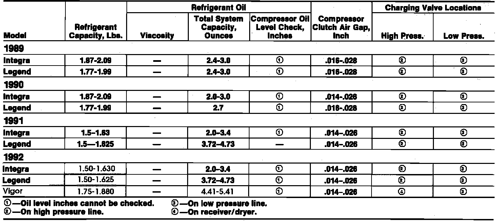

Initial Inspection and Diagnostic Overview
Specifications:

WARNING: R-134a systems require the use of special service equipment designed specifically for R-134a systems. R-12 servicing equipment cannot be used on R-134a systems.
1. Connect gauge manifold following manufacture's instructions. Insert a thermometer in the vent outlet, then determine relative humidity and ambient air temperature by using a portable weather station or calling your local weather station.
2. On Legend, Vigor and 1989 Integra models, ensure that the vehicle is not in direct sunlight, then open hood and front doors. Place temperature control at MAX COLD, press VENT and FRESH buttons, then switch fan to MAX position.
3. On 1990-92 Integra models, ensure that the vehicle is not in direct sunlight, close hood and front doors. Place temperature control at COLD, slide function control lever to VENT position and recirculation control lever to INSIDE-AIR position, then switch fan to highest position.
4. On all models. start engine and operate at 1500 RPM for 10 minutes with no driver or passengers in vehicle, then check delivery temperature from thermometer in dash vent and high and low system pressure from A/C gauges.
5. Using chart shown in Fig. 1, mark delivery temperature along vertical line, then intake temperature (ambient air temperature) along bottom line.
6. Draw a line straight up from air temperature to humidity, then mark a point one line above and one line below humidity level (10% above and 10% below humidity level).
7. From each point, draw a horizontal line across to delivery temperature, delivery temperature should fall between the two lines.
8. Complete low and high side pressure tests in same way, any measurement outside lines may indicate need for further inspection.